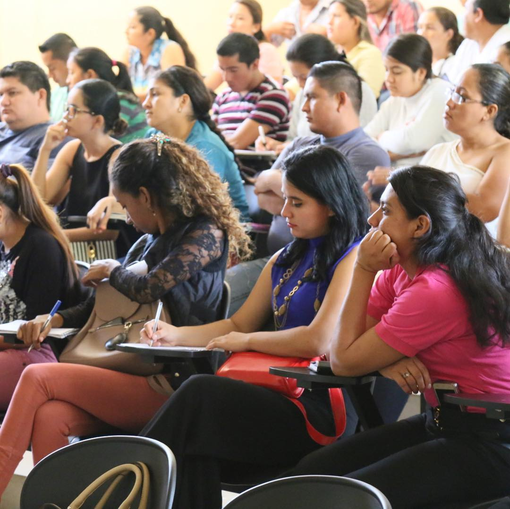
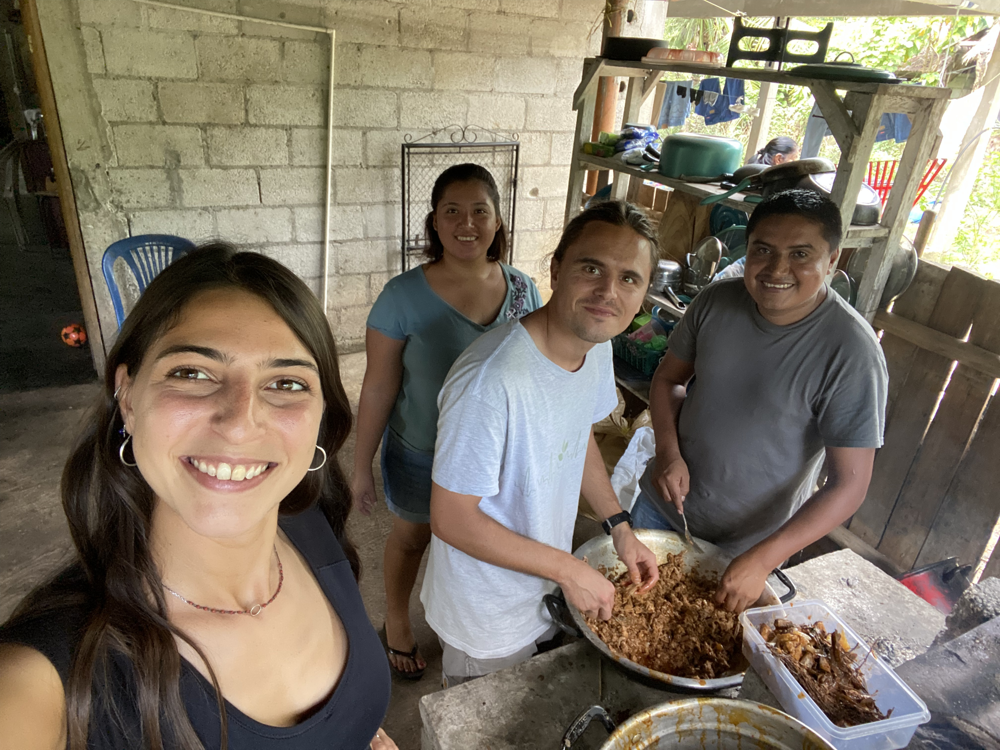

Attivo
Comparte Comunidad
Nelle comunità rurali del Petén dove zeroCO2 pianta alberi, Comparte porta la formazione. Agricoltura organica, gestione sostenibile della terra, autonomia economica per le famiglie contadine.
Siamo una ONLUS italo-guatemalteca. Portiamo formazione nelle comunità più isolate del Petén. Con il tuo 5×1000 continuiamo a farlo.


Era il 2018. Un gruppo di giovani italiani e guatemaltechi seduti a tavola si sono chiesti: cosa manca davvero alle comunità del Petén? La risposta era semplice quanto difficile: educazione di qualità, strumenti concreti, connessione col mondo.
Da quel pranzo è nata Comparte — un nome che in spagnolo significa condividi. Oggi operiamo in Guatemala con progetti di formazione universitaria, educazione ambientale e sviluppo delle comunità rurali.
"Crediamo che l'educazione sia l'unico ingrediente in grado di innescare lo sviluppo sostenibile."
Nelle comunità rurali del Petén dove zeroCO2 pianta alberi, Comparte porta la formazione. Agricoltura organica, gestione sostenibile della terra, autonomia economica per le famiglie contadine.
Seminari online con docenti europei per studenti e professori del CUDEP — il centro universitario più isolato dell'unica università pubblica del Guatemala. Dal 2018, 1.500 persone formate.
Un programma in 5 moduli sulla crisi climatica per ragazzi di 13-17 anni nelle comunità rurali. Prima edizione: 27 studenti a Nuevo Horizonte, con INAB e il Ministero dell'Ambiente guatemalteco.
Dal 2018 abbiamo portato il cinema in 7 comunità rurali che non avevano mai avuto accesso alla cultura. Film in spagnolo, in collaborazione con l'ICAIC cubano. Un'esperienza che ha lasciato il segno.
Quando fai la dichiarazione dei redditi, puoi destinare il tuo 5×1000 a Comparte. Non ti costa nulla — è una quota delle tue tasse che altrimenti andrebbe allo Stato.
Non riduce il tuo rimborso IRPEF. Non è una donazione aggiuntiva. È gratuito.
Codice Fiscale Comparte Onlus
97977810585
Puoi anche donare direttamente tramite bonifico: